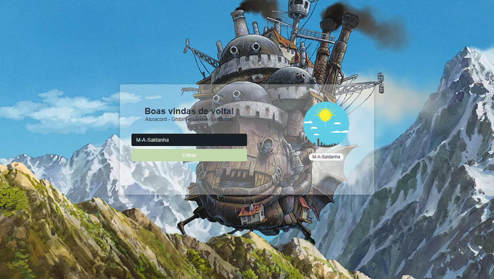
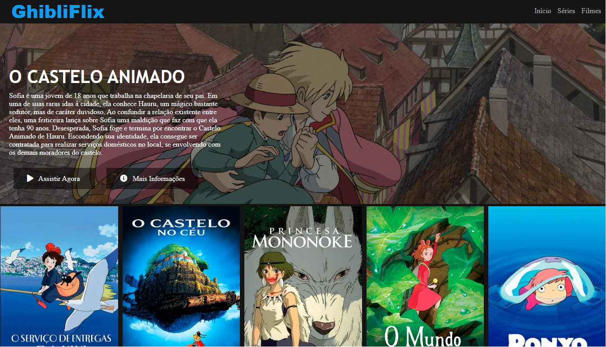

Sobre


Projeto desenvolvido na Imersão React da Alura com a orientação dos professores Mario Souto e Paulo Silveira.Onde aprendi mais sobre o uso do React.js e seus React Hooks,também, o uso do Next.js e outras tecnologias e ferramentas,como exemplo, Supabase que é um BaSS(Backend as a Service) onde hospedamos o banco de dados e o Vercel onde hospedamos o projeto.
Projeto de recriar a interface do Netflix desenvolvido no Bootcamp Impulso React Web Developer e parceria com a DIO,com a mentoria do Professor Felipe Aguiar, foi feito um "clone" da interface da Netflix com algumas alterações onde criei uma pagina que mostra somente filmes do Studio Ghibli e coloquei alguns links úteis que levam a Filmografia do estúdio, e onde pode assistir o filme que coloquei como principal.
